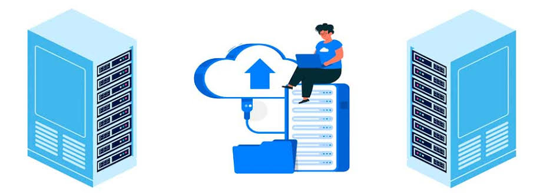

O que é Backup?
Backup é uma cópia de segurança dos seus arquivos importantes. Ele serve para evitar a perda de dados caso algo aconteça com seu computador, celular ou outro dispositivo.
Pergunta 1:
Por que o backup é importante?
Por que fazer backup?
Imagine perder todas as suas fotos, vídeos e documentos importantes por conta de um problema no computador. Isso pode acontecer por falha no hardware, vírus, exclusão acidental ou até um ataque hacker. O backup evita esse tipo de tragédia digital.
Pergunta 2:
O backup pode proteger seus dados de:
Tipos de backup
- Backup local: Feito em um HD externo, pendrive ou outro dispositivo físico.
- Backup na nuvem: Armazena os arquivos em serviços online, como Google Drive, OneDrive e Dropbox.
- Backup híbrido: Combina as duas opções para maior segurança.
Pergunta 3:
Qual é a vantagem do backup híbrido?
Como fazer um backup simples?
- Escolha onde salvar — Para maior segurança, use um HD externo e um serviço de nuvem ao mesmo tempo. Se for apenas um, a nuvem é a opção mais segura contra danos físicos.
- Copie seus arquivos importantes — Selecione fotos, documentos e outros arquivos essenciais. Crie pastas organizadas para facilitar o acesso.
- Automatize o processo — No Windows, use o Histórico de Arquivos. No Mac, ative o Time Machine. Na nuvem, configure sincronização automática.
Pergunta 4:
Qual é uma boa prática ao realizar backups?
Com que frequência devo fazer backup?
- Arquivos importantes: diariamente ou semanalmente.
- Documentos pessoais: semanalmente ou mensalmente.
- Backup completo do sistema: mensalmente ou sempre antes de grandes atualizações.
Pergunta 5:
Com que frequência você deve fazer backup de arquivos importantes?
Conclusão
Fazer backup é simples e pode evitar grandes dores de cabeça. Escolha um método que funcione para você e mantenha seus dados protegidos!